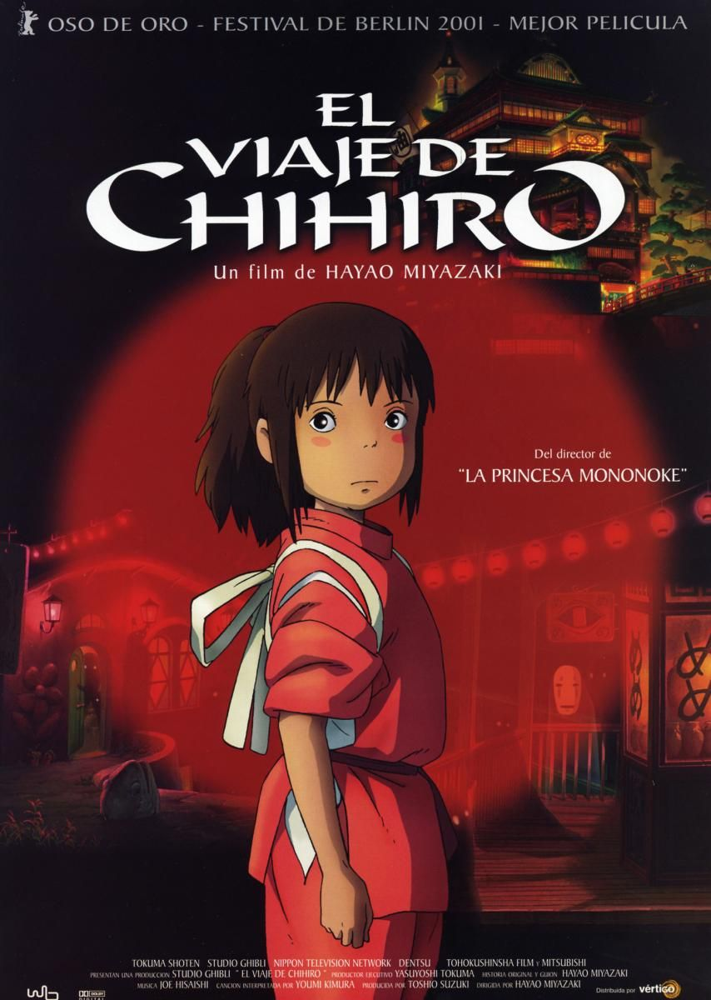

El viaje de Chihiro (千と千尋の神隠し Sen to Chihiro no Kamikakushi?, lit. La misteriosa desaparición de Sen y Chihiro) es una película de animación japonesa de 2001 dirigida por Hayao Miyazaki y producida en el Studio Ghibli, por Tokuma Shoten, Nippon Television Network, Dentsu, Buena Vista Home Entertainment, Tohokushinsha Film, and Mitsubishi and distributed by Toho. Las voces durante la película hacen referencia a Rumi Hiiragi, Miyu Irino, Mari Natsuki, Takeshi Naito, Yasuko Sawaguchi, Tsunehiko Kamijō, Takehiko Ono, and Bunta Sugawara. Se trata del séptimo largometraje dirigido por Miyazaki dentro del estudio y de la decimosegunda producción de Ghibli. El filme cuenta la historia de una niña de diez años llamada Chihiro, quien durante una mudanza se ve atrapada en un mundo mágico y sobrenatural, teniendo como misión buscar su libertad y la de sus padres, y así poder regresar a su mundo.
Miyazaki escribió el guion después de haber decidido que la película estaría basada sobre la hija de diez años de un amigo, quien iba a visitar su casa cada verano. En ese momento Miyazaki estaba trabajando en dos proyectos personales, pero ambos fueron rechazados. Con un presupuesto de 1900 millones de yenes —19 millones de dólares estadounidenses—, la producción de El viaje de Chihiro comenzó en 2000.4
Desde su estreno, que fue el 20 de julio de 2001, El viaje de Chihiro alcanzó un gran éxito dentro y fuera de Japón. Con una recaudación mayor a los 30 000 millones de yenes —229 millones de dólares—, fue la película más taquillera en la historia del cine japonés; (hasta la llegada de la película de Demon Slayer en 2020), mientras que a nivel mundial recaudó más de 264 millones de dólares. Aclamada por la crítica internacional, la película es considerada una de las mejores de la década de los 2000, y una de las mejores películas animadas de todos los tiempos. En cuanto a premios, ganó un Óscar en la categoría de mejor película de animación —la única película de anime que ha recibido dicha condecoración hasta ahora—; también ganó el Oso de oro, ex aequo con Domingo sangriento, en el Festival Internacional de Cine de Berlín de 2002, siendo la única película de animación en conseguirlo hasta la fecha. Además, se encuentra en el top 10 de las 50 películas que deberías ver a los 14 años según el British Film Institute.
Argumento :
Chihiro y sus padres se están mudando a otra ciudad, un hecho que la niña encuentra molesto al no estar de acuerdo con el cambio y no duda en demostrarlo con su falta de ánimo y mal humor. Durante el trayecto, su padre decide tomar un atajo para ahorrar tiempo, pero solo consiguen internarse en un bosque y encontrarse frente a un estrecho y extraño túnel. Sus padres deciden bajar del coche para explorarlo aunque Chihiro se niega. Al otro lado del túnel, la familia descubre un pueblo aparentemente abandonado que su padre razona es uno de los tantos parques de atracciones que se inauguraron y quebraron rápidamente años atrás en Japón. Mientras la familia recorre el lugar buscando a alguien que los oriente encuentran puestos al aire libre donde se detienen a comer; sin embargo, al no encontrar quien los atienda, deciden tomar los alimentos servidos sin permiso, razonando que al tener dinero para pagar pueden hacerlo. Chihiro decide alejarse para continuar investigando y encuentra a un misterioso joven llamado Haku, quien le alerta que debe llevarse a sus padres y huir antes de que anochezca, lo que sucederá en pocos minutos.
Chihiro corre en busca de sus padres, aunque a medida que va oscureciendo la ciudad poco a poco va cobrando vida, los faroles se encienden y aparecen de la nada una gran variedad de espíritus. Al llegar al restaurante en el que había dejado a sus padres, Chihiro descubre que se han convertido en dos enormes cerdos; atemorizada, la niña decide huir del sitio, pero cuando intenta llegar al pequeño túnel descubre que la pradera junto a los locales se ha vuelto un océano inmenso por donde arriba un barco, del cual comienzan a desembarcar espíritus de diversas formas y tamaños.
Chihiro descubre que su cuerpo está desapareciendo; sin embargo, Haku aparece nuevamente y le da de comer alimentos de ese mundo, lo que la hace regresar a la normalidad. Tras esto, la lleva rápidamente y de manera clandestina a una casa de baños termales, en la cual debe conseguir un trabajo hasta que él pueda ayudarla a escapar. Haku envía a Chihiro con el calderero de la casa de baños, Kamaji, y le dice que le pida un trabajo a este. Kamaji rehúsa la petición de la niña, debido a que ya tiene a los susuwatari trabajando para él; sin embargo, le encomienda a Lin, una trabajadora de los baños, que envíe a Chihiro con la bruja Yubaba, la cruel dueña de la casa de baños.
Yubaba explica a Chihiro que en realidad el lugar es un balneario público al que van a sanar y descansar ocho millones de dioses (cifra metafórica del sintoísmo y folclore japonés para referirse al infinito en el mundo sobrenatural). Yubaba trata de echar a Chihiro, pero ella persiste y no cesa de pedirle un trabajo, recordando la advertencia de Haku de que todo aquel que no trabaje será convertido en un cerdo. La persistencia de Chihiro provoca que Yubaba finalmente le otorgue un puesto de trabajo, pero la bruja la obliga a firmar un contrato con el que le roba su nombre y rebautiza como Sen (千). Haku aparece, pero al recibir órdenes de Yubaba actúa como alguien frío y cruel, y aparentemente sin reconocer a Sen le ordena a Lin que sea su compañera y le enseñe a trabajar.